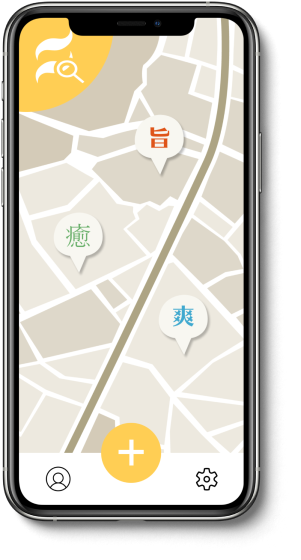
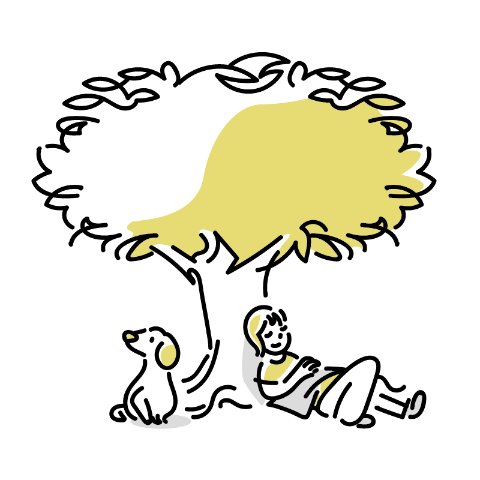

匂いという新しい検索
scen-si
センサイ
最近、匂いを感じることが減っていませんか
コロナ禍の外出自粛やマスク着用により、街にあふれる「匂い」に気づくことが少なくなりました。
そんな味気のない日々を変えてくれる存在が「scen-si(センサイ)」です。
scen-siとは
scent（匂い）× site（場所）
scen-siは、自分の印象に残った場所を「匂い」で紹介し共有できるアプリです。
匂いの情報を共有することで、場所の雰囲気をよりイメージしやすくなり、マスク着用を余儀なくされている私たちの日常に「匂いの彩り」を与えてくれるでしょう。
scen-siの特徴
匂いを文字で表現
さまざまな匂いを12種類の漢字と色とフォントで表現し、投稿ができます。
漢字一覧
匂いで検索ができる
上記の12種類の漢字を使って匂いの検索ができます。
例えば「甘」を選択すると、マップ上には「甘」の投稿だけが表示されるようになります。マップ上に表示する匂いの鮎類を絞ることができ、似たような匂いを探したいときなどに役立ち、新たな発見に繋がるかもしれません。
ストーリー
他にもこんな使い方
近所にこんな場所あったんだ！
secn-siは匂いで場所を調べるアプリです。
お店だけでなく、自然を見つけることも可能です。
散歩のおともにいかがでしょうか。

知らない土地で飲食店が固まっている
場所が知りたい！
匂いの検索機能を使うことで、同じような匂いをマップ上に表示させることが可能です。 例えば「旨」の漢字で絞ることで、大体の飲食の固まっているゾーンが分かります。
お家で知らない土地を探検
scen-siは遠くの場所のマップも見ることが出来ます。
知らない土地の匂いを想像しながら、行きたいところを探す妄想旅行ができます。
現地の写真だけでなく、匂いの情報もあるので、よりリアルにその場をイメージできます。
また、過去に行ったことのある土地を調べて思い出の匂いを思い出すのもいいかもしれません。